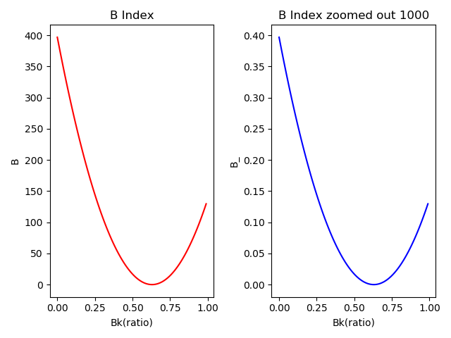
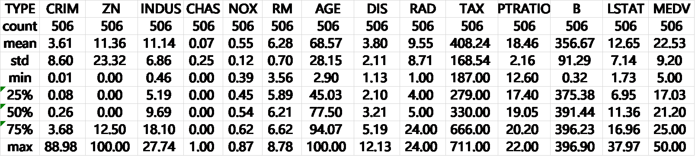
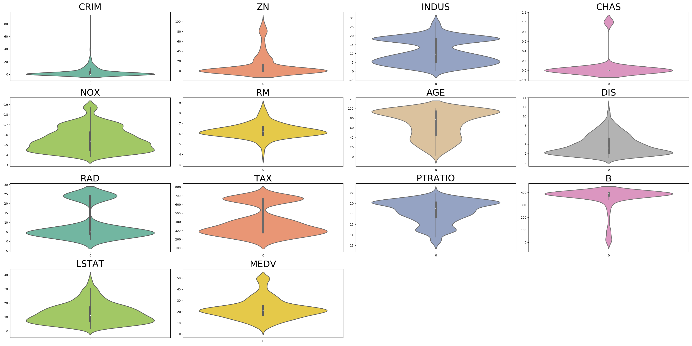
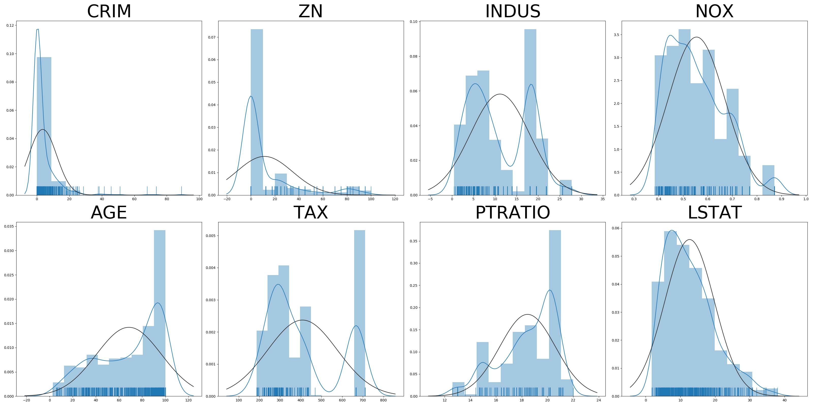
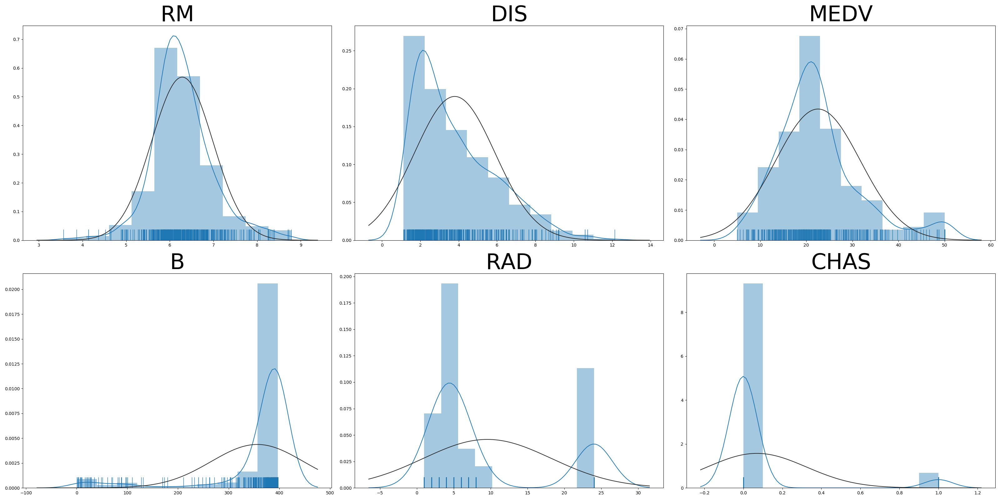
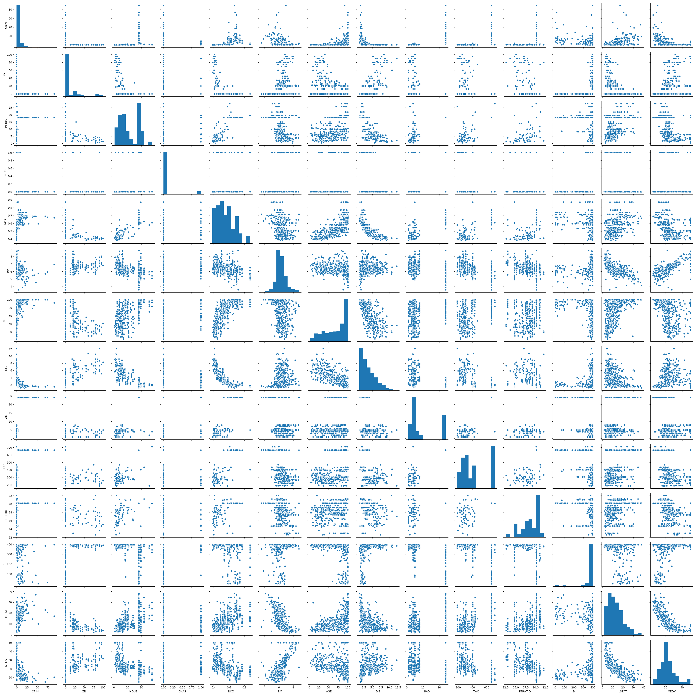
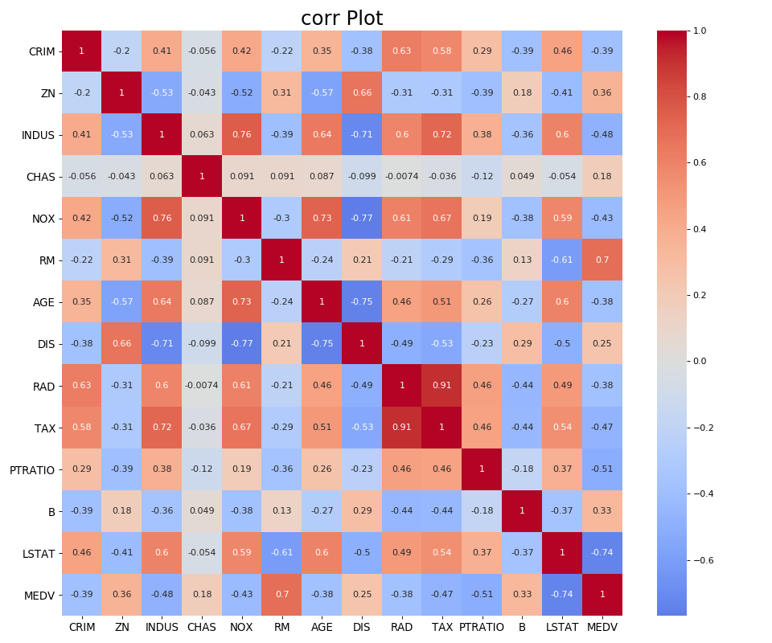

0. 写在前面
| 配置 | 版本 |
|---|---|
| Python | 3.7.6 |
| scikit-learn | 0.22.1 |
| Boston Housing Price | (506, 13) 1978 |
| PyTorch | 1.4.0 |
波士顿房价数据集应该是机器学习入门的经典数据集了，在很多课程里被用来演示Linear Regression或者Ridge Regression等。也有一些博客中提到，用DNN或者BP网络去做这个数据集，还有用LiR+kNN+SVM做的综合了13个模型 (是个狼灭 :smile: ，但是没找到他的源代码，只有设计思路，他的结论是LGBR模型表现比较好，后面可以考虑部分复现一下)
从最基础的线性回归来说，有一些博客对为什么使用岭回归，为什么做归一，为什么剔除部分特征，说的不是很清楚。所以，在这我想自己实现一下整个流程，看看这个几十年前的数据集到底能带来什么好玩的东西。
本身想一篇文章写完的，但是光写完前期的分析部分就发现已经超长了，所以就按照设计的分析思路，把文章分成三个部分来做。这一篇主要是对于原始数据的一些分析思路，在模型构建前的准备工作。基本的分析方法都是源自统计学分析的一些东西，比如：描述性统计，箱线图，正态分布，偏度与峰度，相关系数等等。分析流程有些部分不是很严谨，毕竟是个“样本”数据集，做的有些东西也不完整，权当自己的分享学习记录。
1. 分析流程概要
整个分析过程会分为三大块，前期的准备工作，中期假设研究和模型训练，后期结论与总结。在前期的准备工作中，主要是针对数据收集以及预处理；中期主要是针对特征值与目标值关系的探讨；后期是根据训练得出的结论总结。

2. 前期
2.1 数据准备
Boston房价数据可以直接在sklearn.dataset.load_boston模块获得，属于二手数据，不需要自己进行收集，所以非常方便，而且数据基本没有缺失值。不过，这个数据集也存在着一定问题，这些问题会导致该分析报告的结果实际意义缺失，只会在Machine Learning的技术角度有比较好的解释性。
数据的时效性过于陈旧(1978年)
收集的13个特征值没有理论依据(可能出现某一变量与目标值相关性弱)
收集该数据集所采用的方法和过程需要在原始Paper里检验
也正是因为这篇分析是基于数据集而不是从解释影响房价因素的需求出发，所以整个分析流程的起点是以机器学习流程的
收集数据开始，而不是像做学术论文以研究背景开始。其次，该数据集本身没有什么缺失值，所以数据清洗的步骤在此报告中省略不谈。先来看看这个数据集的Description，发现这个数据集共506个样本，有13个特征值和1个目标值。
from sklearn.datasets import load_boston
data = load_boston()
print(data.DESCR)
Boston house prices dataset
---------------------------
**Data Set Characteristics:**
:Number of Instances: 506
:Number of Attributes: 13 numeric/categorical predictive. Median Value (attribute 14) is usually the target.
:Attribute Information (in order):
- CRIM per capita crime rate by town
- ZN proportion of residential land zoned for lots over 25,000 sq.ft.
- INDUS proportion of non-retail business acres per town
- CHAS Charles River dummy variable (= 1 if tract bounds river; 0 otherwise)
- NOX nitric oxides concentration (parts per 10 million)
- RM average number of rooms per dwelling
- AGE proportion of owner-occupied units built prior to 1940
- DIS weighted distances to five Boston employment centres
- RAD index of accessibility to radial highways
- TAX full-value property-tax rate per $10,000
- PTRATIO pupil-teacher ratio by town
- B 1000(Bk - 0.63)^2 where Bk is the proportion of blacks by town
- LSTAT % lower status of the population
- MEDV Median value of owner-occupied homes in $1000's
:Missing Attribute Values: None
:Creator: Harrison, D. and Rubinfeld, D.L.
This is a copy of UCI ML housing dataset.
https://archive.ics.uci.edu/ml/machine-learning-databases/housing/
This dataset was taken from the StatLib library which is maintained at Carnegie Mellon University.
The Boston house-price data of Harrison, D. and Rubinfeld, D.L. 'Hedonic
prices and the demand for clean air', J. Environ. Economics & Management,
vol.5, 81-102, 1978. Used in Belsley, Kuh & Welsch, 'Regression diagnostics
...', Wiley, 1980. N.B. Various transformations are used in the table on
pages 244-261 of the latter.
The Boston house-price data has been used in many machine learning papers that address regression
problems.
根据统计学对统计数据的基本三分类(分类数据，顺序数据和数值型数据)，对该数据集的14个变量进行划分，同时判断是否是连续变量或离散变量。这是根据dataset的描述信息进行的初步分析，后续要根据数据的具体形态调整解释方法。
| 变量名 | 变量描述 | 值类型 |
|---|---|---|
| CRIM | 犯罪率(Ratio) | 数值-连续-比率 |
| ZN | 住宅占地比(Ratio) | 数值-连续-比率 |
| INDUS | 非零售业务占地比(Ratio) | 数值-连续-比率 |
| CHAS | 河流束缚(Boolean) | 分类 |
| NOX | 一氧化碳浓度(Ratio, per 10 million) | 数值-连续-比率 |
| RM [1] | 每个住宅平均房间数(Number) | 数值-离散-数量 |
| AGE | 1940年之前建成住宅比率(Ratio) | 数值-连续-比率 |
| DIS | 距五个工作地点的加权距离(Number) | 数值-连续-数量 |
| RAD [2] | 公路通达性指数(Index) | 数值-离散-指数 |
| TAX | 税率(Ratio, per $10,000) | 数值-连续-比率 |
| PTRATIO | 师生比(Ratio) | 数值-连续-比率 |
| B [3] | 黑人指数(Index) $B=1000(B_k-0.63)^2$ | 数值-连续-指数 |
| LSTAT | 低收入人口比率(Ratio) | 数值-连续-比率 |
| MEDV [4] | 住房中位数价值(Number) | 数值-连续-数量 |
对部分变量的注解：
RM在数据集中的表现是连续的，但是房间数应该被作为离散变量处理，这里RM取小数时无法解释，所以暂作离散型处理RAD通达性指数从其所表现的含义上来说，应该是一个顺序数据或定性数据(Qualitative Data)，但是由于不知道原始的对该指数的计算方式未知，所以暂作离散型数值变量。额外提一句，Likert Scale (7级量表)会被作为连续型变量，这里到底是作为离散还是连续后面可以再讨论。B黑人指数的计算式是 $B=(B_{k}- 0.63)^2$ ，而 $B_{k}$ 表示的才是黑人比率(Ratio)， $B$ 作为运算后的结果，暂作Index指数处理，并且因为其具有连续可解释性，所以是连续数值变量MEDV是房价的中位数，在原始数据集的表现上是离散的，且原始的房屋价格也应该是离散的，这里作为离散数据处理
根据初步的分析，结合数据集Description，可以对各个变量的取值范围进行简单判断。
| 变量名 | 取值范围 | 处理方式 |
|---|---|---|
| CRIM | [0, 1] | 缩放 [1] |
| ZN | [0, 1] | 缩放 |
| INDUS | [0, 1] | 缩放 |
| CHAS | ∈{0, 1} | 解释 [2] |
| NOX | [0, 1] | 缩放 |
| RM | (0, +∞], $Z$ | 取整 [3] |
| AGE | [0, 1] | 缩放 |
| DIS | [0, +∞], $Q$ | - [4] |
| RAD | (0, +∞], $Z$ | - |
| TAX | [0, 1] | 缩放 |
| PTRATIO | [0, 1] | 缩放 |
| B [5] | [0, 396.9], $B_k ∈ [0, 1]$ | 缩放+归一化 |
| LSTAT | [0, 1] | 缩放 |
| MEDV | [0, +∞], $Q$ | - |
对上述14个变量的取值区间进行初步判断后，有如下五种数据预处理方式。把缩放和归一化分开谈的原因是，归一化的方式有很多，缩放只是其中一种，在本文里特指等比例缩放(同时乘或者除 )，归一化特指的是Min-Max Scaler
$x’ = \frac{x-min(x)}{max(x)-min(x)}$
其实，更严谨一些来说，无论是归一化还是标准化，都属于特征缩放\(Feature scaling\)，大多数博客把这两种处理方式都作为数据预处理，详细的信息可以看Feature scaling
- 缩放，主要针对Ratio类型，取值范围在[0, 1]之间，所以不需要进行归一化。需要缩放的是Ratio的单位，是%还是‰或者其他。并且由于缩放属于线性变换，不会破坏数据的线性关系。
- 解释，主要针对分类变量，对不同数值表现进行解释
- 取整，主要针对RM，虽然RM表现为连续型，但是5.2间房子没有解释意义，所以这里进行向下取整操作，对此的解释是，5.8间房不到6间且0.8间房不能作为一整间房间处理。
- 无操作，主要针对连续定量变量，其数值本身具有尺度意义。
- 缩放+归一化，主要针对 $B=1000(B_{k}-0.63)^2$ 指数。原因是，$F_{B}(B_{k})$ 方程的$y$轴变化幅度过大，数据的离散程度可能过高，对解释数据不利。进行缩放后，原始数据线性关系不改变 (Fig. 2-1)，在下文中寻找一种合适的归一化方式，目的是提升可解释性，最终作用在模型上的时候，可以有较好的收敛表现吗，最好不要出现欠拟合与过拟合。另一种思路是找到 $B_{k}$的值，因为在description中 $B_{k}$ 才是真正的黑人比例，再对 $B_k$ 进行分析，判断是不是需要处理。
import matplotlib.pyplot as plt
import numpy as np
b_k = np.arange(0, 1, 0.01) # b_k∈[0,1]
b0 = 1000 * (b_k - 0.63) ** 2 # 原始的B指数
b1 = (b_k - 0.63) ** 2 # 缩放1000后的B指数
fig, axs = plt.subplots(1, 2)
axs[0].plot(b_k, b0, color='r')
axs[0].set_title('B Index')
axs[0].set_xlabel('Bk(ratio)')
axs[0].set_ylabel('B')
axs[1].plot(b_k, b1, color='b')
axs[1].set_title('B Index zoomed out 1000')
axs[1].set_xlabel('Bk(ratio)')
axs[1].set_ylabel('B_')
plt.show()

在此部分，完成了两项任务。第一，对原始数据集的获取和优缺点简述。第二，对数据的Description进行了简单的分析，初步提出了几点数据预处理的方式。但是，所有的处理操作，需要在对数据进行描述性统计后再进行判断。下一小节是关于数据的形态分析，以及描述性统计操作。
2.2 数据形态分析
在初步分析过数据集后，这一小节对数据形态进行分析。在分析开始之前，因为sklearn.datasets.load_boston()返回的是一个Bunch类型，所以先把data_boston数据转换为pd.DataFrame类型，方便后续的使用。
from sklearn.datasets import load_boston
import pandas as pd
data_boston = load_boston()
data = pd.DataFrame(data_boston.data, columns=data_boston.feature_names)
data['MEDV'] = data_boston.target2.2.1 数据集原始信息
查看数据集的缺失值情况data.info()，来判断在预处理的时候需不需要对nan值进行填充。
data.info()
RangeIndex: 506 entries, 0 to 505
Data columns (total 14 columns):
# Column Non-Null Count Dtype
--- ------ -------------- -----
0 CRIM 506 non-null float64
1 ZN 506 non-null float64
2 INDUS 506 non-null float64
3 CHAS 506 non-null float64
4 NOX 506 non-null float64
5 RM 506 non-null float64
6 AGE 506 non-null float64
7 DIS 506 non-null float64
8 RAD 506 non-null float64
9 TAX 506 non-null float64
10 PTRATIO 506 non-null float64
11 B 506 non-null float64
12 LSTAT 506 non-null float64
13 Price 506 non-null float64
dtypes: float64(14)
memory usage: 55.5 KB 这里可以看到，506组数据的14个变量都不为空，所以不需要data.fillna操作。但是在这里提醒一句，这个数据集比较小，直接用float64加载到内存里也是不影响的。如果数据集本身较大，需要手动指定dtype到合适的数据类型，以优化内存。如果是pd.read_csv()的话，也可以开启low_memory=True。
在此部分：1.分析了数据的形态，共13个特征值，一个目标值，以np.float64进行存储，共506组数据。2. 数据没有空值，不需要补空。3. 整个数据集质量较高，样本充足，由于是二手数据，所以也不需要清洗工作了(毕竟是人家论文里用的数据，质量不会太差的，如果是自己挖的数据，数据源质量差的话，清洗工作是真的费劲的要死，折磨王) 4. 13个特征后面如果要做PCA的话不知道可行性如何，在特征选择的时候可能优先考虑其他方法，不用PCA。
2.2.2 描述性统计
在把数据集转换为pd.DataFrame类型后，就已经具备了很多pandas内置提供的方法。所以，在此处使用data.describe()，查看数据的描述性统计。描述性统计是用数学语言表述一组样本的特征，用来概括和解释样本数据。
print(data.describe())
根据描述性统计的信息，从8个方面(Count, Mean, Std, 25%, 50%, 75%, Min, Max)来观察数据。需要注意的是，连续型Ratio横向对比时需要统一单位(CRIM, ZN, INDUS, NOX, AGE, TAX, PTRATIO, LSTAT)；分类变量不进行均值标准差等统计数据讨论(CHAS)；指数按数值型讨论(RAD, B)；数值型可以讨论所有统计学描述信息(RM, DIS, MEDV)
Count：所有数据没有缺失，都是506个
Mean和Std：
ZN和AGE都是连续型ratio，他们的Std都比较高(离散程度)，所以用mean来衡量这两个ratio时，不能准确反映其数据形态。而TAX虽然Std比较高，但他的单位是per $10,000，在将数据转换到以%为单位时(即per $100)，相较于ZN和AGE，他的Std并不是特别大(1.68<23.3<28.1)。所以，在后续可视化的过程中，要注意ZN和AGE这两个连续型ratio的数据分布。数值型变量RM,DIS和MEDV的Std表现都比较好，数据离散程度不是特别极端。Min, Q1, Q2, Q3和Max：五个数据构成箱线图的基本要素。
CRIM,AGE和LSTAT这三个ratio的Min-Max差距比较大，尤其是CRIM的Q1, Q1, Q3，主要都集中在了Q3位置上，数据在靠近1的位置上可能有极端值影响。MEDV的Max虽然比其Min值大十倍，但是他的Q点分布相对均匀，所以可能该数据存在少部分极小值，但对数据分布影响不明显。通过绘制
Violin Plot(Box plot箱线图的变种)， 来展示统计数据形态，使用seaborn.violinplot进行绘制
import seaborn as sns
import matplotlib.pyplot as plt
names = data_boston.feature_names.tolist()
names.append("MEDV")
def violin_plot(data, names):
plt.figure(2, figsize=(32, 16))
plt.subplots_adjust(hspace=0.3, wspace=0.3)
for i, k in enumerate(names):
plt.subplot(4, 4, i + 1)
plt.title(k, fontsize=16)
sns.violinplot(data=data[k], linewidth=2,
width=0.8, fliersize=3,
whis=1.5, notch=True,
scale='width', palette=[sns.color_palette("Set2", n_colors=14)[i]])
plt.show()
violin_plot(data, data.columns.to_list()) # 绘制violin图
在这一部分，看了数据的描述性统计信息，发现：1.除了部分ratio值的单位过小，导致与其他变量不再同一尺度，剩下的数据基本都表现良好，数据跨度也不是很大。 2. 有一个分类变量，后面看看共线性，或者能不能升维，和其他变量组合为一个新的特征。 3. 除了NOX的标准差相对比较小，其余数据的标准差都不趋于0，而且13个特征也不是很好做PCA，很容易丢失信息。
2.2.3 数据分布特征
结合统计性描述的分析情况，在分布特征情况中主要看变量的正态分布频数密度，使用数据可视化工具检查数据分布状态，这里使用seaborn.displot和scipy.stats.norm来进行绘图。需要注意的是， 由于数据类型的区别，将变量划分为三组进行绘图，分别是ratio_names = ['CRIM', 'ZN', 'INDUS', 'NOX', 'AGE', 'TAX', 'PTRATIO', 'LSTAT'], number_names = ['RM', 'DIS', 'MEDV'], index_names = ['B', 'RAD', 'CHAS']。同时为了制图方便，设定两个Figures, 形状分别是(2, 4)和(2, 3)。
import matplotlib.pyplot as plt
import seaborn as sns
from scipy.stats import norm
data_boston = load_boston()
data = pd.DataFrame(data_boston.data, columns=data_boston.feature_names)
data['MEDV'] = data_boston.target
ratio_names = ['CRIM', 'ZN', 'INDUS', 'NOX', 'AGE', 'TAX', 'PTRATIO', 'LSTAT']
number_names = ['RM', 'DIS', 'MEDV']
index_names = ['B', 'RAD', 'CHAS']
def dis_plot(size: tuple, data: pd.DataFrame, name: list) -> None:
"""
用来绘制分布图的函数
:param size: 子图形状
:param data: 数据
:param name: 需要绘制的列名 columns
:return:
"""
plt.figure(1, figsize=(32, 16))
plt.subplots_adjust(hspace=0.3, wspace=0.3)
for i, k in enumerate(name):
plt.subplot(size[0], size[1], i + 1)
plt.title(k, fontsize=50)
sns.distplot(data[k].tolist(), bins=10, hist=True, rug=True, kde=True)
plt.show()
# 绘制ratio变量分布图
dis_plot((2, 4), data, ratio_names)
# 绘制index和number变量分布图
dis_plot((2, 3), data, number_names+index_names)
Ratio变量分布图及正态分布拟合

Index和Number变量分布图及正态分布拟合

可以发现以下几点：
ZN,AGE和B都有明显的偏态，且正态性差INDUS,TAX,PTRATIO和RAD偏态不规律，且正态性差NOX,LSTAT和DIS有明显的正偏态，正态拟合程度可以接受RM和MEDV基本符合正态分布，正态性好CHAS是分类变量，不对正态性进行解释深入计算一下各个变量的
偏度和峰度，可以利用scipy.stats.skew和scipy.stats.kurtosis来直接获取，也可以用numpy套用公式运算。$S_c=\frac {\sum{x_i}-\overline{x}}{n}$ , $k=\frac {\mu_4}{\sigma^4}$
from scipy.stats import skew, kurtosis
names = data_boston.feature_names.tolist()
names.append("MEDV")
def skew_kur(data):
for i, k in enumerate(names):
print(f"[{i}]: {k}的偏度Skew是{skew(data[k].tolist())}, 峰度Kurtosis是{kurtosis(data[k].tolist())} \n") 转换到表格形式，与图像所展现出的分布表现吻合，尤其是加粗的几个变量，其偏态系数与其分布形态吻合。对于线性回归模型,当因变量服从正态分布,误差项满足高斯–马尔科夫条件（零均值、等方差、不相关）时,回归参数的最小二乘估计是一致最小方差无偏估计
| 编号 | 变量名 | 偏态系数 | 峰态系数 |
|---|---|---|---|
| [0] | CRIM | 5.207652387859715 | 36.75278626142281 |
| [1] | ZN | 2.219063057148425 | 3.9799487739913717 |
| [2] | INDUS | 0.29414627684418543 | -1.2332184715629375 |
| [3] | CHAS | 3.395799292642519 | 9.531452835911432 |
| [4] | NOX | 0.7271441597740319 | -0.07586421510237251 |
| [5] | RM | 0.40241466802496245 | 1.8610269725310244 |
| [6] | AGE | -0.5971855948016143 | -0.97001392664039 |
| [7] | DIS | 1.0087787565152246 | 0.4712985716109914 |
| [8] | RAD | 1.0018334924536951 | -0.8705205036905461 |
| [9] | TAX | 0.6679682687237768 | -1.1429848848352007 |
| [10] | PTRATIO | -0.7999445320367449 | -0.29411637770037524 |
| [11] | B | -2.8817983452627716 | 7.143769291496051 |
| [12] | LSTAT | 0.9037707431346133 | 0.476544755729746 |
| [13] | MEDV | 1.104810822864635 | 1.4686287722747462 |
在这部分看了13+1个变量的分布，其实主要是MEDV，只要他是正态分布的，后面的线性模型分析都好说，余下的布情况表现好的数据不是特别多，给:cry:整郁闷了，不行直接不要了算了。
2.2.4 多变量研究
在本小结，主要探讨变量间的相关性情况，并且根据先前的分析， 对不同变量所使用的评价相关性的指标也需要重新判断，包括Pearson积差相关系数，Spearman秩相关系数和Kendall秩相关系数
简单的去理解这三种不同相关系数适用情景：Pearson对应线性相关；Spearman是非参数统计方法，对原始变量分布不做要求，适用范围广但是统计效能较弱；Kendall是用于反映分类变量相关性的指标，适用于两个变量均为有序分类的情况。(可以看看讲解，统计学习–三种常见的相关系数, 三个相关系数的注意事项, Pearson, Spearman, Kendall)
在判断使用何种相关性评价之前，应该先检查变量间的关系是否是线性相关或者更加复杂的非线性相关。但由于Boston数据集就是用来处理线性回归问题的，所以假设变量间存在的关系是线性相关，除过分类变量和不符合正态分布的变量外，其余都是用Pearson相关系数检验。
其实更佳的做法应该是检验分析变量的相关关系，甚至可以构建非线性的方程，比如将MEDV处理为区间变量，代表不同等级的房屋，赋予其解释意义，再结合如CHAS进行Spearman分析，或者对其他特征变量进行二值化sklearn.preprocessing.Binarizer()。暂时先不做了，后期根据模型的状况再补充，嘻嘻嘻 :smile:
sns.pairplot(data)
这里重点看一下最后一行，其他特征变量关于目标值MEDV的关系，其中RM,LSTAT表现的线性关系比较明显，而CRIM,NOX,DIS表现的相关性有些模糊，不是很符合线性相关。其他因变量的自相关中，AGE和DIS都与NOX有比较明显的相关性，同时AGE和DIS都与CRIM有比较明显的相关性，LSTAT对RM和AGE似乎也有影响。
暂且根据线性关系假设，有如下安排。需要注意：1. Kendall和Spearman的假设一致，但是Kendall的结论相对会比较保守；2. 对于其余变量，都进行Pearson相关性分析，只不过不重点关注或解释其相关系数；3. 自变量间的相关性假定为线性，所以都放到Pearson里看看。
| 假设 | 变量 | 相关性标准 |
|---|---|---|
| 连续-正态-线性-无异常 | NOX,LSTAT,DIS,RM,MEDV | Pearson |
| 独立-比率-单调 | - | Spearman |
| 独立-比率-单调 | - | Kendall |
这里绘图使用sns.heatmap热力图的形式，相关系数使用pd.DataFrame.corr('Pearson')来获得，重点关注pearson_corr_name = ['NOX', 'LSTAT', 'DIS', 'RM', 'MEDV']，代码如下
def heatmap_plot(title, df, co):
plt.figure(figsize=(12, 10), dpi=80)
sns.heatmap(df.corr(method="pearson"),
xticklabels=df.corr().columns, yticklabels=df.corr().columns,
cmap=co,
center=0,
annot=True)
plt.xticks(fontsize=12)
plt.yticks(fontsize=12)
plt.title(title, fontsize=22)
plt.show()
heatmap_plot('corr Plot',data, 'coolwarm')
在这个分析里发现，有些变量间的相关系数比较大(这里没有F检验，容忍度，VIF)，可能需要考虑多重共线性的影响，是不是要剔除自相关的变量，或者直接排除LinearRegression来使用Ridge Regression。
2.3 预处理
经过前一部分的分析，对数据的类型，描述性统计，分布和相关性等大致形态有了一定了解。在这部分可以考虑对数据进行预处理，遵循的准则是在不影响原有数据的特征的情况下，使得数据的可解释性增强。在先前的分析中，发现了三个主要问题。
第一，各个ratio的单位不同，进行等比缩放不会影响原始数据，尤其是
NOX的单位是per 10 million，而其他大多数ratio的单位是%，可是对于ratio类型变量有一些问题，当NOX等比缩放100,000从而把单位由千万分之一转向1%时，他的分布形态虽然没有改变，但是相较于其他ratio数值过小了(1%和80%在data里是1和80)，这种表现得数据跨度太大，有可能让模型收敛的速度变慢。但是，重新思考缩放的意义只是在于转换其分母部分的单位，缩放在NOX这个变量中体现的意义确实不明显(只会让mean,std,min,max等数值发生改变而数据分布形态不变，解释方式也不变)。那么如果重新把NOX作为一种数值型变量处理而不是ratio，那么反而会更加好理解。再进一步考虑，NOX一氧化碳浓度，或许可以表示空气质量，如果把NOX处理为一种有序变量，以区间进行分割，组成一个集合，其中每个分数可以代表NOX的等级，如 $\left{X_n|0\le n \le 10,n\in Z\right}$，这种合并区间的方法或许可以让新的NOXI的分布频数更加集中(表现出明显右偏)。第二，
RM对于MEDV的相关性比较强，对RM向下取整后会不会削弱这种相关性？将连续变量转换为离散变量，会不会影响正态分布？RM对LSTAT的自相关性会不会减小？综合考虑后，不能对RM进行转换，维持原有数据。第三，对$B$和$B_k$的转换后，$B_k$的形态不变，除了数值缩小，归一化后，数据分布表现依然不好，都集中在0.01附近。那么这个时候可以考虑使用异常值检测，1. 可以考虑设置阈值，把极端值去除，然后再平均，放大过小得数据和缩小较大的数据。注意，这种特征预处理的方法不是很标准的方法(直接删除异常值后平均)，因为删除的异常数据中可能含有有用信息。2. 还可以考虑用基于标准偏差（$3δ$原则）的异常值检测，但是标准化要求原数据要符合正态分布。3. 可以做数据变换，如倒数，平方根，对数等，需要注意的是数据里有没有定义域之外的值。可以看看预处理的一些方法，非正态数据转换，预处理与特征选择，异常点检测。
总的来说，这种数据预处理的思路比较偏向于分析的角度，而不是机器学习的角度，一切要求数据预处理的起点都源自数据形态的分析和数据集本身所具有的信息。在这部分提出的大多数数据预处理的思路，都是从统计学角度出发的(我自己也把数据集放到SPSS里看了一下)，而不是机器学习。其实最简单的办法， 就是在看完数据的
data.describe()后，直接对数据进行Min-Max，把特征和目标值都拉到统一尺度下，方便后面的模型构建以及学习过程，根本不需要上面的一切分析，只要没有空值，一概归一化处理，但是不能回答为什么的问题。
2.4 前期分析小结
其实这部分的分析做完，发现挺多很好玩的东西。
比如在相关系数检验里，
TAX和DIS与RAD的相关性，税高的地方交通通达性越高，但是离工作的地方就越远，这倒是挺符合资本主义的风格，乡下都是富人区？还有
LASTS与DIS,低生活水平的人反而住的离工作的地方远，这不活脱脱的北上广么，上班在国贸，住天通苑？描述性统计里，
CRIM最大最小值差距非常大，同一个城市里也有比较乱的区域，这我就想起来在Belfast的时候，Royal Hospital附近的几个街区，到下午五点的时候街上就什么都没有了，一个人也没有，商店全关，家家户户窗帘紧闭，还有些街区有明确的City Council立的标识牌，说这有Anti-social behavior，要小心。这些好玩的信息还有很多，在完成这个项目的时候会总结出来，看看有没有什么参考意义，以后也能用的。
自己写这玩意的时候也发现了一些问题，比如高数和统计学学的玩意忘得差不多了，基本一点都不剩了，好些概念知道大概是什么但是解释不出来，有时间了还是需要自己补补课。下一部分就是模型方面的构建工作了，什么时候能写好也不知道，取决于失眠情况。 ☮